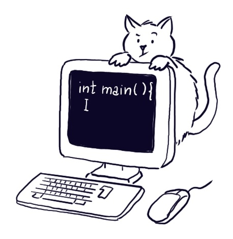

Informatica A

Ingegneria Gestionale, PoliMi, 2025/2026
- Cartella condivisa con i materiali del corso
- Setup dell’ambiente di sviluppo
- Link alle registrazioni
- Programma del corso
Calendario
La prima lezione del corso si terrà lunedì 15/09/25 in L.06 dalle 8:30 alle 11:15.
Snippets
Durante le lezioni, per alcuni esempi ed esercizi sono forniti dei frammenti di codice, li trovate nelle cartelle Snippets_todo e Snippets Nella versione todo, il codice è solamente abbozzato con parti mancanti da completare. Siete invitati a provare voi stessi a completarlo, dopo aver letto i commenti che suggeriscono qualche idea per la soluzione o sottolineano alcuni aspetti importanti. Quando disponibile, potete consultare la versione completa per verificare la correttezza della vostra soluzione. Tuttavia non c’è un solo modo per risolvere un esercizio! Provate diverse strategie risolutive e domandatevi sempre quale è la migliore.


Esercitazioni
Le esercitazioni del corso sono tenute dal Dr. Michele Craighero, il materiale è disponibile nella cartella condivisa.
Laboratori
Sono previste 5 sessioni di Laboratorio (i mercoledì indicati sul calendario). I laboratori sono articolati su 3 turni
- Squadra 1: cognomi da Abate a Battaglia, in aula B8 1.4 dalle 8:15 alle 11:15
- Squadra 2: cognomi da Battanta a Brivio, in aula B8 1.4 dalle 11:15 alle 14:15
- Squadra 3: cognomi da Broglio a Chiesa, in aula B8 1.2 dalle 11:15 alle 14:15
Tutoraggio
Verso dicembre e a ridosso degli esami saranno attivate delle sessioni di tutoraggio, è un’ottima idea partecipare attivamente per prepararvi al meglio.
Esame
L’esame consiste di due parti:
- Parte A: una decina di quesiti che includono domande a risposta multipla, risoluzione di problemi e la scrittura di semplici snippet di codice.
- Parte B: esercizi di programmazione.
Condizione necessaria (ma non sufficiente) per passare l’esame è aver superato la parte A. Il voto finale è dato dalla somma dei punteggi della parte A e B.
I temi d’esame degli anni passati sono disponibili qui. È un’ottima idea svolgere i vecchi temi d’esame per verificare la propria preparazione.
Vi verranno fornite per tempo istruzioni dettagliate su come procedere per poter svolgere l’esame in modo sereno.
Studiare informatica serve per imparare a…
- analizzare e risolvere problemi: nel vostro lavoro di ingegneri gestionali affronterete scenari decisionali complessi che richiedono creatività e precisione. L’informatica insegna a pensare in modo logico e ad aggredire problemi difficili scomponendoli in fasi più piccole e gestibili.
- ottimizzare le soluzioni: non basta risolvere un problema, un ingegnere gestionale deve assicurarsi che la soluzione trovata sia la migliore possibile. Una mente algoritmica è in grado di snellire le operazioni, ridurre i costi e migliorare l’efficienza complessiva di qualsiasi processo, dalla gestione della catena di approvvigionamento di un magazzino alla pianificazione delle attività di un’azienda.
- automatizzare i processi: l’informatica insegna la pigrizia… saper individuare le opportunità di automazione all’interno di un’organizzazione, non solo aumenta la produttività, ma anche la possibilità di concentrarsi su altre attività più strategiche e innovative.
- collaborare consapevolemente: l’aver avuto esperienze di programmazione vi permetterà collaborare con cognizione di causa con professionisti di altri settori, tecnici e sviluppatori di software.
- stare al passo: le nuove tecnologie stanno ridisegnando completamente il mondo del lavoro. Una buona conoscenza dell’informatica di base è la grammatica con cui potrete impadronirvi delle tecnologie del momento e di quelle del futuro.
Risorse aggiuntive
- Dispensa a cura del Prof. Barenghi che copre i prima argomenti del corso.
- The C Programming Language.
- Un compilatore online che può essere utile per iniziare a familiarizzare con il C. Tuttavia cercate di iniziare ad utilizzare un IDE il prima possibile.
- Peter Norvig, Teach Yourself Programming in Ten Years (Peter Norvig è stato Director of Research a Google).
- George Polya, Come si risolve un problema.
I would like to thank Monica Vitali, Diego Stucchi, Marco Lattuada, Marcello Restelli, Giacomo Boracchi and Andrea Fusiello for sharing with me their advices and their teaching materials on which the slides of this course are largely based.